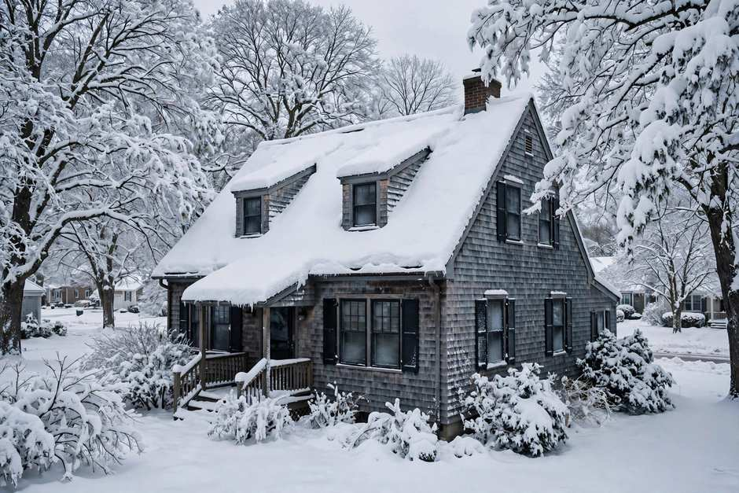

How to prepare your roof for winter in Des Plaines
Fall is the pre-winter window: clear the gutters, check flashing and shingles, and look at the attic. This guide explains the checklist, the ice-dam mechanism, and the calendar.

Winter preparation is mostly fall work: clearing drainage, checking the roof’s weak points, and looking at attic conditions before snow and freeze–thaw cycles arrive. This guide follows the seasonal calendar from the research behind this site, explains how ice dams actually form, and separates homeowner checks from professional scope.
No single freeze date is stated in this guide, because the sources conflict (first freeze 19 October vs 28 October in different sources). The useful window is described in general terms: after leaf fall, before the first hard freeze.
Why Des Plaines winters are hard on roofs
At Chicago O’Hare, the nearest official station, the 1991–2020 normals show 38.4 inches of snowfall a year: January 11.3 inches, February 10.7, March 5.5, December 7.6, November 1.8, and April 1.3. About 121 nights a year fall to or below freezing, against about 43 days that stay below freezing all day — a heavy freeze–thaw pattern that works on flashing, boots, valleys, and shingle seals all winter.
Snow load is a design question, not a number to convert from snowfall: the city’s Table R301.2(1) ground snow load is 25 psf, a code design value, not a measured load on any roof and not a claim about any roof’s capacity. Never convert snowfall inches to roof load without a structural basis.
Most Des Plaines homes were built before 1980 (median year built 1966, ACS 2019–2023), so many attics carry thin original insulation, blocked soffit vents, or mixed vent types — recurring patterns in Chicagoland guides. Structure age is not roof age, but the pattern explains why attic checks matter in fall.
When should you winterize your roof in Des Plaines IL?
The seasonal calendar points to October as the ideal pre-winter window: after leaf fall, before the first hard freeze, with fall gutter clearing as the highest-value fall task in Chicago seasonal guides. September is the transition month — severe season tapering, pre-winter inspection worth arranging — and November is the last pre-winter check window, with freeze nights beginning in earnest and average first measurable snow dated 18 November in one secondary source (unverified — treat as approximate).
By December, winter conditions are established and the ice-dam core season (December–March, a reasoned characterisation, not a National Weather Service-defined season) has begun. Preparation after that point is limited to monitoring and professional help; no winter installation timeline is promised anywhere on this site, and sources differ on winter replacement feasibility.
Spring has its own window: March is the post-winter inspection period, when freeze–thaw damage reveals itself — flashing, boots, and lifted shingles — and spring gutter clearing follows. Winter preparation and post-winter inspection are two halves of the same annual cycle.
The fall roof maintenance checklist that actually matters
The checklist below separates what a homeowner can check from the ground or attic from work that belongs to a roofer. Nothing here instructs roof repair:
1. Clear gutters and downspouts
Fall gutter clearing before freeze is the highest-value pre-winter task in Chicago seasonal guides, given here as homeowner guidance. Blocked gutters overflow, soak fascia, and feed ice dams. Clearing means removing leaves and debris so water reaches the downspouts; downspout flow can be checked with a hose at ground level. See the gutter installation page for the roofline system as a whole.
2. Check flashing from the ground and attic
Look for displaced, lifted, or visibly damaged flashing at chimneys, walls, valleys, and skylights — from the ground with binoculars, and from the attic for daylight or staining. Flashing repair itself is professional scope; the homeowner’s job is to note and record what looks wrong.
3. Note lifted and missing shingles
From the ground, look for missing tabs, lifted edges, and creased shingles, especially on wind-exposed slopes. Record their positions with photographs. Re-seating or replacing shingles is roofer work; the check itself is the homeowner’s contribution.
4. Trim overhanging branches
Branches overhanging the roof drop debris, shade shingles, and can strike the roof in storms. Trimming that can be done safely from the ground is homeowner work; anything requiring a ladder, a saw near the roof, or work over the roofline belongs to a tree professional — tree work is not roofing scope.
5. Check the attic from the inside
Look for daylight through the deck, staining, damp insulation, blocked soffit vents, and signs of animals or pests. Note whether bathroom and kitchen exhausts vent through the roof properly rather than into the attic. Do not disturb insulation more than needed, and stop if conditions feel unsafe.
6. Arrange a professional roof inspection
A pre-winter inspection covers what ground checks cannot: the roof surface up close, flashing details, valleys, penetrations, and attic ventilation. See the roof inspection page for what an inspection covers, and call during listed hours to discuss scope and terms.
Ice dam prevention in Des Plaines: the attic is the real problem
The ice-dam mechanism is well established in building-science guidance: heat escaping into the attic warms the roof deck, snow on the upper roof melts, the meltwater runs down to the cold eave, refreezes, and forms a dam — and later meltwater backs up under shingles behind it. Leaks from ice dams typically appear near exterior walls.
The hierarchy cited from University of Minnesota Extension, via a Chicago source, is air sealing first, then insulation, then ventilation. Ventilation is one leg, not the cure alone: a ventilated attic with major air leaks will still warm the deck. The Des Plaines guide’s ventilation shorthand is 1:150, or 1:300 with roof and soffit vents — a shorthand that omits the IRC’s balance and distance conditions, so it must not be presented as the full code rule.
No ice-dam-prevention guarantee is made here, and no percentage reduction is claimed. New gutters alone do not prevent ice dams. Ice-dam removal as a service is not claimed on this site: removal needs specialist steam equipment and winter dispatch capability, neither of which is confirmed for this business. For ventilation topics, see the roof ventilation installation page.
Roof snow preparation: what to do before the first storm
Before the first storm, the useful preparations are the fall checklist above, plus knowing what not to do during and after snowfall. Do not climb onto a snow-covered or icy roof. Do not chip at ice with hammers or metal tools — sources warn that chipping damages roofs. Roof rakes used from the ground are discussed in general guidance, but any roof-level snow work is specialist scope and is not claimed as a service on this site.
After heavy snow, watch from inside for new stains near exterior walls, sagging, or unusual sounds, and from the ground for displaced shingles or icicle patterns that suggest damming. Record what is seen with dates. If water is entering, interior control and documentation come first, as the emergency guide on this blog explains.
Common mistakes in November preparation
- Skipping the gutters. Fall clearing is the single highest-value pre-winter task in the guides. Blocked gutters are a direct feed into ice-dam and fascia trouble.
- Treating ventilation as the whole answer. Air sealing and insulation come first in the cited hierarchy. Ventilation alone does not prevent ice dams.
- Waiting for the first freeze. The pre-winter window is after leaf fall and before hard freeze. Once ice dams have formed, prevention has become response.
- Climbing on the roof to check it. Ground and attic checks cover the homeowner’s part. Roof-level checks belong to a roofer with proper access.
- Assuming a new roof prevents ice dams. A new covering over an unchanged attic still has the same heat-loss mechanism. The attic is part of the roof system.
When to call a professional
Call a roofer when flashing or shingle problems are found, when attic conditions suggest ventilation or insulation questions, when ice dams have leaked before, or when a pre-winter inspection is wanted. For repair topics, see the roof repair page.
Frequently Asked Questions
How do I prepare my roof for winter in Des Plaines?
Work the fall checklist: clear gutters and downspouts, check flashing and shingles from the ground and attic, check the attic for daylight and dampness, and arrange a professional inspection. The window is after leaf fall, before the first hard freeze.
When should I winterize my roof in Des Plaines IL?
October is the ideal pre-winter window in the seasonal calendar, with November as the last pre-winter check window. No single freeze date is stated, because sources conflict on first-freeze dates.
How do I prevent ice dams in Des Plaines?
No prevention guarantee is made here. The cited hierarchy is air sealing, then insulation, then ventilation; ventilation alone is not the cure. New gutters alone do not prevent ice dams. Ice-dam removal is not claimed as a service on this site.
Who does winter roof maintenance in Des Plaines Illinois?
Roofing contractors handle inspection, flashing, and ventilation topics; tree work and insulation work are separate trades unless a business confirms it performs them. WP Exterior Inc can be reached at (224) 802-4866 during listed hours to discuss scope.
How much does winter roof preparation cost in Des Plaines?
No single guide figure covers winter preparation as a package, and no price is published here as this business’s price. Pricing comes from a written on-site estimate; call during listed hours to discuss scope and terms.
Get help with Roofing in Des Plaines
For a pre-winter inspection or questions about flashing, ventilation, or ice dams, call WP Exterior Inc at (224) 802-4866 during listed hours.